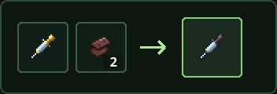

Tham khảo · 0.2.1
Khối và công thức nấu ăn
Chế tạo nguyên liệu từ file công thức của mod.
Bàn sinh học
Bàn chế tạo · 1 × mutagen:bio_workbench

GGG
ICI
III| Biểu tượng | Thành phần |
|---|---|
G | minecraft:glass |
C | minecraft:crafting_table |
I | minecraft:iron_ingot |
Dịch mang
Bàn làm việc sinh học · 1 × mutagen:carrier_fluid

| Thành phần | Đếm |
|---|---|
minecraft:potion | 1 |
minecraft:sugar | 1 |
minecraft:slime_ball | 1 |
Chất xúc tác
Bàn làm việc sinh học · 2 × mutagen:catalyst

| Thành phần | Đếm |
|---|---|
minecraft:nether_wart | 1 |
minecraft:quartz | 1 |
Máy ly tâm
Bàn làm việc sinh học · 1 × mutagen:centrifuge

| Thành phần | Đếm |
|---|---|
minecraft:iron_ingot | 5 |
minecraft:glass | 2 |
minecraft:redstone | 1 |
minecraft:furnace | 1 |
Ống tiêm vàng
Bàn làm việc sinh học · 1 × mutagen:golden_syringe

| Thành phần | Đếm |
|---|---|
mutagen:syringe | 1 |
minecraft:gold_ingot | 3 |
minecraft:redstone | 1 |
Nền đột biến
Bàn làm việc sinh học · 1 × mutagen:mutagen_base

| Thành phần | Đếm |
|---|---|
mutagen:carrier_fluid | 1 |
minecraft:experience_bottle | 1 |
Ống tiêm netherite
Bàn làm việc sinh học · 1 × mutagen:netherite_syringe

| Thành phần | Đếm |
|---|---|
mutagen:golden_syringe | 1 |
minecraft:netherite_scrap | 2 |
Huyết thanh đảo ngược
Bàn làm việc sinh học · 1 × mutagen:reversal_serum

| Thành phần | Đếm |
|---|---|
mutagen:carrier_fluid | 1 |
minecraft:fermented_spider_eye | 1 |
Máy giải trình tự
Bàn làm việc sinh học · 1 × mutagen:sequencer

| Thành phần | Đếm |
|---|---|
minecraft:iron_ingot | 4 |
minecraft:glass | 2 |
minecraft:comparator | 1 |
minecraft:spyglass | 1 |
Chất ổn định
Bàn làm việc sinh học · 1 × mutagen:stabilizer

| Thành phần | Đếm |
|---|---|
mutagen:carrier_fluid | 1 |
minecraft:glowstone_dust | 1 |
Máy tổng hợp
Bàn làm việc sinh học · 1 × mutagen:synthesizer

| Thành phần | Đếm |
|---|---|
minecraft:iron_ingot | 4 |
minecraft:glass | 3 |
minecraft:brewing_stand | 1 |
minecraft:redstone | 1 |
Ống tiêm
Bàn làm việc sinh học · 2 × mutagen:syringe

| Thành phần | Đếm |
|---|---|
minecraft:glass_bottle | 1 |
minecraft:iron_ingot | 1 |
minecraft:iron_nugget | 1 |